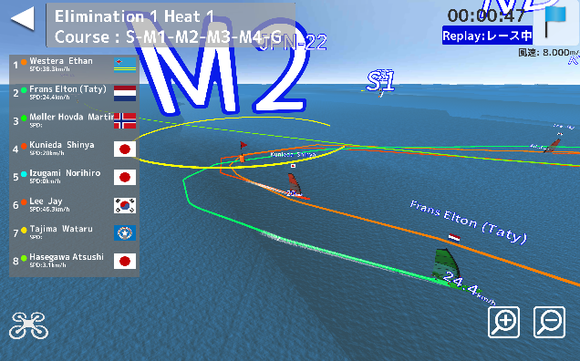
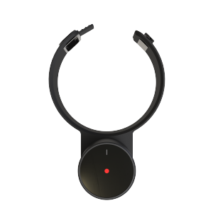
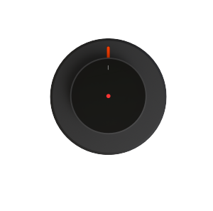
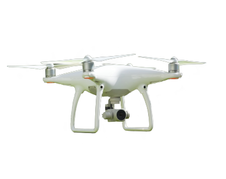

2019 ANAウインドサーフィンワールドカップ横須賀・三浦大会 観戦アプリDLはこちら |
| iOS | Android | Mac | Windows |

|

|
 |
おしらせ |
|
● 2019/05/02 - 2019 ANAウインドサーフィンワールドカップ横須賀・三浦大会観戦版のアップデート公開 ● 2018/06/19 - [6/21-22] 長瀞ー豊洲 荒川１２０km SUPダウンリバーをサポート! ● 2018/05/10 - GULLCAST ANAウインドサーフィンワールドカップ横須賀大会観戦版の公開！ ● 2018/04/25 - GULLCAST観戦アプリケーションダウンロードサイトの準備中 |
GULLCAST 紹介ムービー
スマートフォンアプリ 3D観戦ビューア
GULLCASTは、ウォータースポーツの魅力と楽しさをわかりやすく伝えるためのソリューションです。
誰もが楽しめる観戦体験をつくれる
GULLCASTは、臨場感のあるリアルタイム配信（3D）を観客に配信します。観客は遠く離れた海上で行われるウォータースポーツを楽しむことができるようになります。
選手・観戦者のデータを運営に活用できる
GULLCASTは、選手のデータ、風向き、位置など、競技中のあらゆるデータや観戦者データからレポートを作成します。データに基づく大会運営を進めることができます。
-
高精度なGPSとモーションセンサーにより、位置情報や角度、加速度等のデータをセンシングします。 アタッチメントを取り付けることで、あなたがお持ちのマストなどに用意に取り付けることができます。
-
ボードセンサーは、ボードに簡単に取り付けることができ、ボードの傾きや速度をセンシングします。
-
船＆ブイセンサーは、風向きやスタート・ゴールポイントの位置を計測します。
-
カメラを搭載したドローンで海上の選手を追跡し、臨場感のあるリアルタイムの映像を配信します。
GULLCAST 大会運営用システム
GULLCASTがウォータースポーツの大会を運営するためのあらゆる局面をサポートします。大会・選手データの記録、レースの3D中継、観客・選手のマーケティングレポートなど、今までにない大会運営システムを提供します。
GULLCAST 観客用アプリケーション
GULLCASTは、選手や環境のデータをセンシングし、レースをリアルタイムの3D映像として配信します。観客は、レースの内容を簡単に把握することができ、自分の好きな選手を自由に観ることができます。
GULLCASTを支持してくれているユーザー/パートナー
1GULLCASTはルール解説や選手図鑑、イベント情報などのコンテンツが満載
GULLCASTは、競技ルールや、選手図鑑など、初めての人でもウォータースポーツを楽しめるコンテンツを提供しています。
2レースの進行をドローンでリアルタイムに中継します
遠く離れた海上のレースでも選手のデータをセンシングすることにより、レースを3Dで再現します。また、ドローンでレースを中継することで臨場感のある映像をお届けします。
3観戦者データからレポーティングを作成します
選手や観光客のデータを解析した結果をレポートとして提供します。マーケティングのポイントを抑えることで次回の大会運営をスムーズに行うことができます。